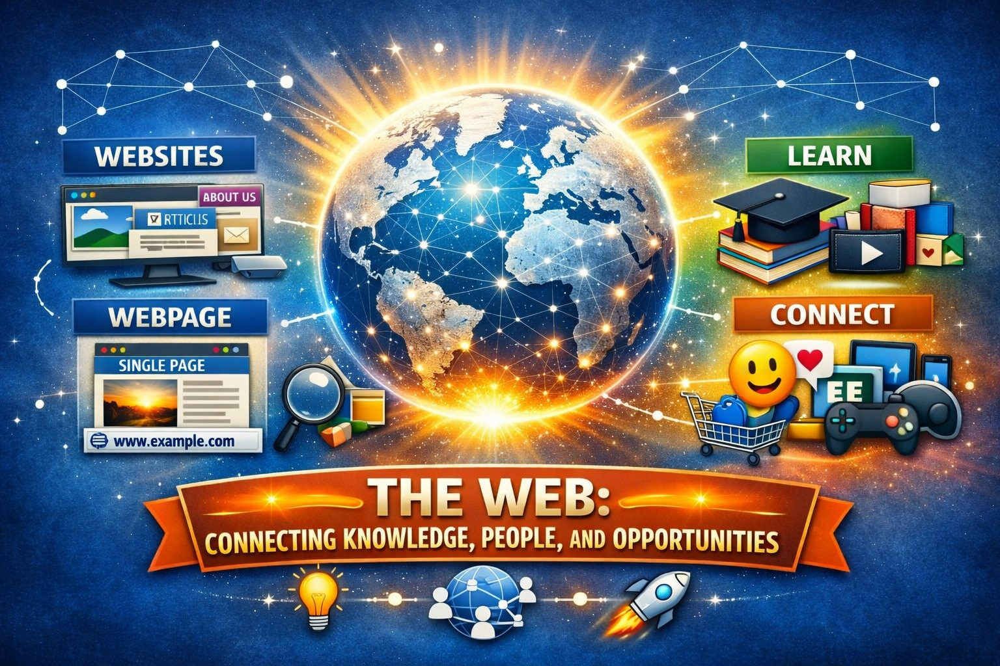
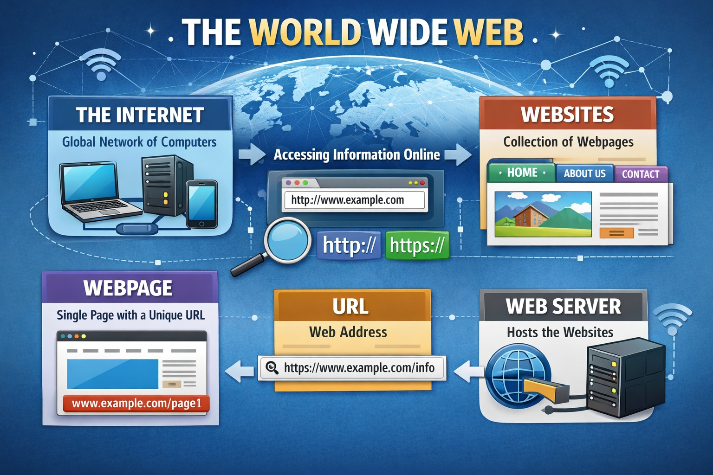
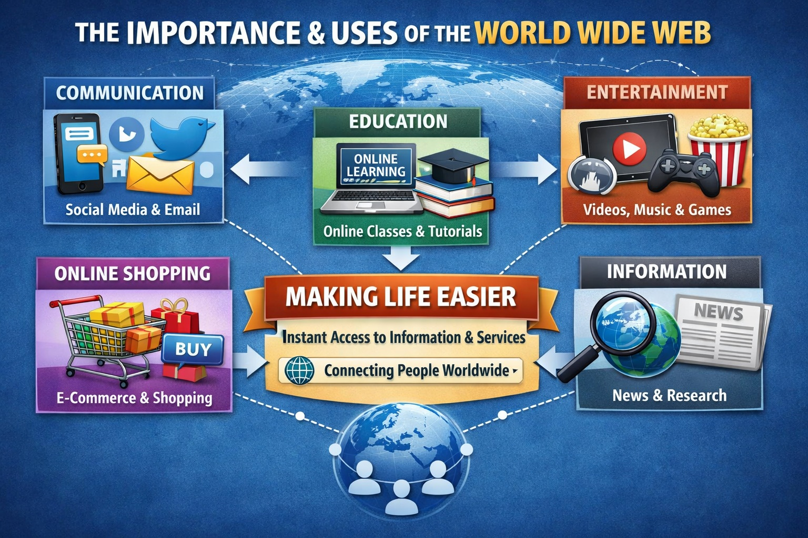
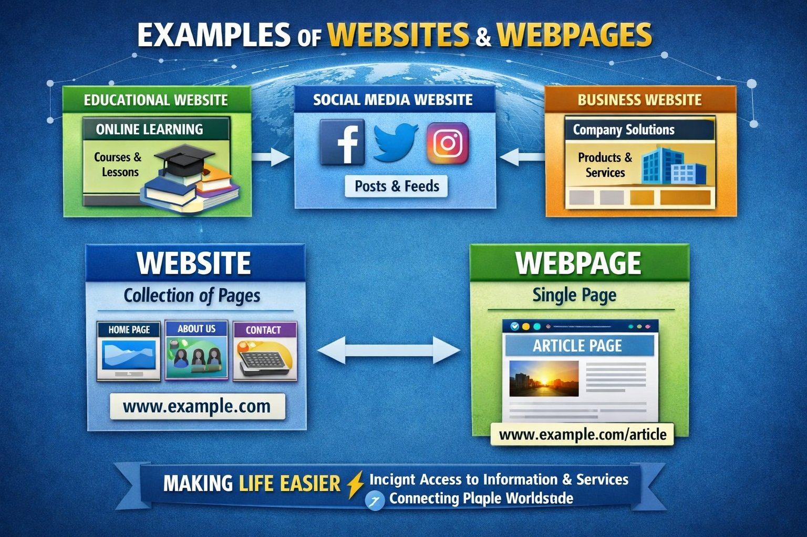
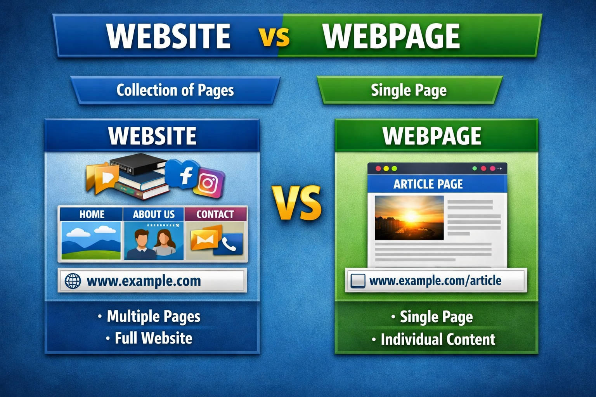
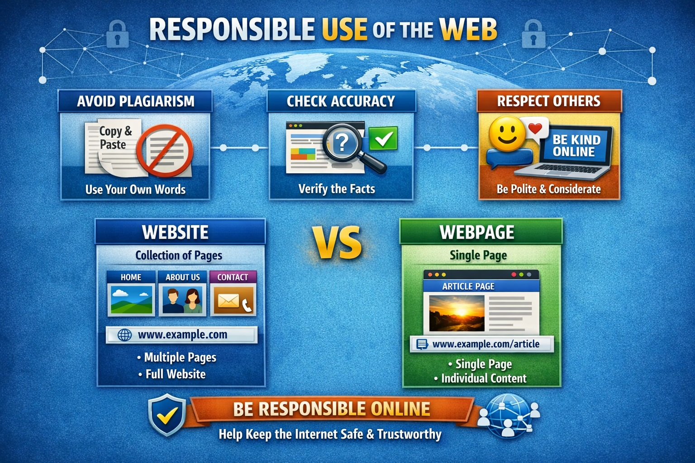

The World Wide Web (WWW) is one of the most powerful inventions of modern times. It is a global system that allows people everywhere to access, share, and connect information through the internet. At its core, the Web is made up of countless websites and webpages, all linked together, forming a vast network of knowledge, communication, and services.
A website is a collection of related pages grouped under one domain name, while a webpage is a single page within that site. These pages are connected through hyperlinks, making it possible to move easily from one idea, resource, or service to another. This interconnected design is what makes the Web feel like a giant library, marketplace, and community rolled into one.
🌐 What the Web is – Learn how it works, how websites and webpages are structured, and how they connect through links.⚡ How it is used – Explore the many ways people rely on the Web every day, from communication and education to entertainment, shopping, and research.
💡 Why it is important – Discover how the Web has transformed society, making life easier by providing fast access to information, connecting people across the globe, and opening opportunities for learning, business, and creativity.

The World Wide Web is a collection of websites that can be accessed through the internet. It helps people share and find information easily.
A website is a collection of webpages, while a webpage is a single page. Each page has a unique URL.

This infographic shows how the Internet connects computers globally, while the Web organizes information into websites made of webpages, each with its own URL. It also illustrates how browsers and servers work together to deliver content.
The World Wide Web is a collection of websites that can be accessed through the internet. It helps people share and find information easily. A website is a collection of webpages, while a webpage is a single page. Each page has a unique URL. The World Wide Web (WWW) is essentially the system that allows us to access and share information over the internet. It was invented by Tim Berners-Lee in 1989 and officially launched in 1991. Here’s a clear breakdown:
🌐 World Wide Web vs. Internet The Internet is the global network of computers connected together. The Web is one of the services that runs on the internet, using browsers to access information stored on websites.
📄 Websites and Webpages A website is a collection of related webpages grouped under a domain name (like example.com). A webpage is a single document within that website, usually written in HTML. Each webpage has a unique URL (Uniform Resource Locator), which acts like its address.
⚙️ How it works Web browsers (like Chrome, Edge, or Firefox) request webpages from servers using the HTTP/HTTPS protocols. Servers then send back the content, which browsers display in a readable format. This system makes it easy to share text, images, videos, and interactive applications worldwide.
The web makes life easier by providing fast access to information and services.

This infographic highlights five key areas:
💬 Communication – Social media and email keep people connected worldwide.
🎓 Education – Online learning platforms make knowledge accessible to everyone.
🎮 Entertainment – Videos, music, and games bring enjoyment anytime, anywhere.
🛒 Online Shopping – E-commerce simplifies buying and selling goods.
🔍 Information Access – Search engines and news sites deliver instant updates.
There are many types of websites:
Website vs Webpage:
Website = collection of pages
Webpage = single page

🖥️ Types of Websites
🎓 Educational websites – Share learning materials and courses (e.g., online schools, tutorials).
💬 Social media websites – Connect people through posts and messages (e.g., Facebook, Twitter, Instagram).
💼 Business websites – (Promote products, services) and company information.
📄 Website vs. Webpage

🌐 Website A website is a collection of related webpages grouped under one domain name. It usually has a homepage and other pages like About Us, Contact, Services, etc. Example: www.microsoft.com — this site contains many pages linked together. Think of it like a book with many chapters.
📄 Webpage A webpage is a single document within a website. It has its own unique URL and displays specific content. Example: www.microsoft.com/about — this is just one page from the Microsoft website. It’s like a chapter inside the book.
Responsible use helps keep the internet safe and trustworthy.

📝 Avoid Plagiarism – Don’t copy others’ work. Always use your own words or give credit to sources.
🔍 Check Accuracy – Verify facts before sharing or believing information online. This helps prevent misinformation.
💬 Respect Others – Be polite and considerate when communicating online. Avoid rude comments or cyberbullying.
🔒 Protect Personal Information – Keep your private data safe, like passwords and addresses, to avoid identity theft.